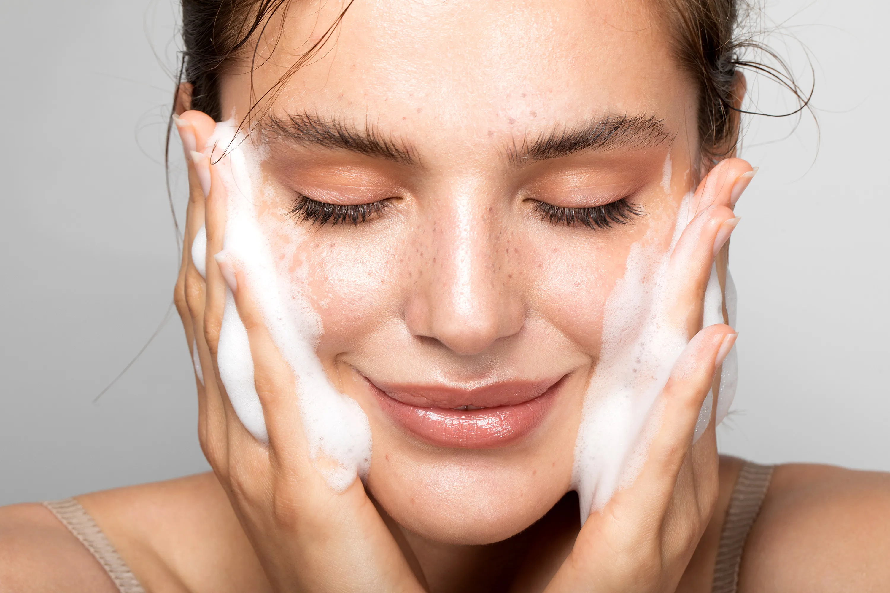
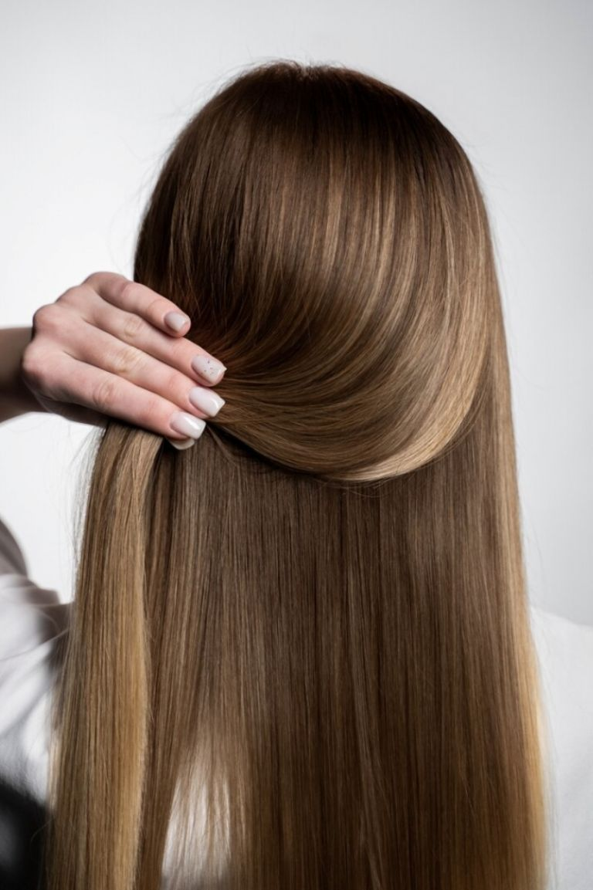
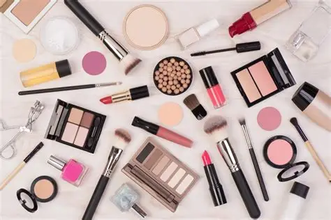

Una piel saludable comienza con una buena rutina. Aquí te compartimos los pasos esenciales para cuidar tu rostro

El verano es una de las épocas del año que más afecta al cabello, no sólo por el agua, el cloro y la sal sino también por la intensidad de los rayos UV. Por eso pedimos consejos a los expertos para evitar los daños que puede sufrir tu pelo en esta estación.

Aprende a lucir bien con estos consejos de maquillaje que te facilitaran la vida
Roberta: Proximamente mi rutina
Tania: ¿Podrían hablar más sobre maquillaje para piel grasa?
Anahi: Definitivamente tengo que comprarme un protector termico